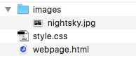
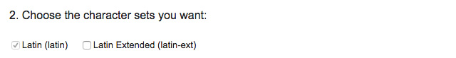
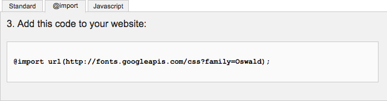
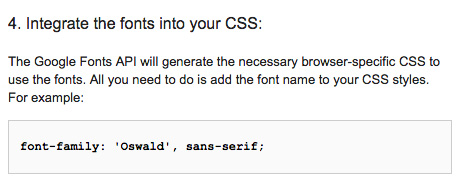

Project: HTML & CSS
Creating a Motivation Web Page
Overview
This project will help you create your own motivational poster.

You'll be editing the existing page from the lessons by making the following edits:
HTML Edits:
- Document Title
- Heading
- Paragraph
- Image
CSS Edits:
- Background Colors
- Text Colors
- Text Size
- Text Font
Other Examples


Getting Started
In the previous lecture, you installed a code editor and learned how to open a project folder within in. If needed, you can download the Sample Project here. You'll be using this sample project to get you started.
Although this is a pretty slick sample, but you'll be able to create your own by following the steps below!
HTML Edits
When looking at the HTML within the webpage.html file, take a moment to review the structure of the document.
Can you identify the HTML code that creates the containers, the image, and the text on this page?
In this project, you'll change the text and photo to this page following the steps below.
Step #1: Find New Photo
Of course, you can use any photo you wish, but it can be fun to use any of these free, high-quality images in your project from UnSplash.com. Visit UnSplash and download any image that you think could make a goofy/serious motivational image. Click onto any image and there is a download button in the upper-right hand corner of each image. Save this image to your computer.

Step #2: Rename the New Photo
Find this new image, it most likely is in your Downloads Folder. Rename this file to something that follows these rules:
Rules:
- Is relatively short, yet descriptive.
- Is all lowercase.
- Has not spaces between possible words.
Examples:
- nightsky.jpg
- mountains.jpg
- waterfall.jpg
Step #3: Proper File Organization
When working with web images, it is important that you place them together. Hopefully, you moved your project folder onto the Desktop from the Lecture, if not, you can do that now. When you find your project folder, move the newly renamed image and drop it into the images folder of your project (within the same folder as the nightsky.jpg).

Step #4: Update the Page Heading
Before we update the image, let's update the HTML heading first. Locate the <h1>One Night</h1> code first. Between the H1 tags, change the words One Night to a heading that matches the appropriateness of your new photo.
Then Save, Refresh, & Test the Page
Since we just made a change to the HTML, it is important that you save your changes, and refresh the web browser to view your changes. You should see the new heading. If not, make sure you updated the code correctly and saved the HTML page.
It is common practice that every change you make to the code is then tested within the browser to see if the effect was written properly.
Step #5: Update the Page Paragraph
Within the <p> ... </p> tags, take a moment to write a brief description on the subject in the photo. The content you add into this paragraph can be serious, funny, or anything you wish. Of course, if you wish, you can create 2 or even 3 short paragraphs, but be careful not to write too much as it may not fix in the page well without some additional CSS edits.
Again Save, Refresh, & Test
Step #6: Update the Photo
The final step in the HTML code is to update the path to the new image you downloaded. If you placed the image within the images folder properly, then you simply have to update the filename of the image correctly.
The current image path is:
<img src="images/nightsky.jpg" alt="Man with flashlight looking into space." />
Simple change the filename nightsky.jpg with the filename of your new image. We don't need to change the path of images/ since both images should be in the same directory (aka folder). It is also a good idea to update the alt tag to have a better description that matches your image (unless you have another photo of a guy with a flashlight looking into space).
Again Save, Refresh, & Test
Again, save your HTML page with the changes and review the changes of your heading, paragraph, and new image within the web browser. As you can see, the HTML is the actual content and containers of the web page. In the next steps, you'll learn how to change some of the styles of the HTML using CSS.
CSS Edits
In order to edit any of the CSS styles of this project, you need to open the styles.css page in your code editor by selecting it from the left-side menu.
Web Page Background Color
body {
background-color: #252325;
}
This style is assigning a dark brown color (in a hexadecimal format) to the background of the entire body of the document. Unless you have graphic design experience, that color value may seem really strange. A great way to find a good color for the background is to match it to a color in the photo. If you don't have a program like Adobe PhotoShop, you can use free tools on the web to help you find the hexadecimal color formats in a photo.

Using the simple web page HTML Color Codes, you can simply upload your file, click onto the "Show Image" button, and click anywhere on your photo to find the color value. Then you can copy that hexadecimal color value and replace the value for the background-color in the CSS code.
Again Save, Refresh, & Test
Page Container Color
You may wish to leave the background color to the page container as white (#ffffff). Of course, using the new skills of finding colors, you can change it to anything you wish. The only visual warning is to make sure that the type is readable. If you wish to have a dark background to the container, you'll want to assign lighter colors to the text in the next few steps.
.pageContainer {
width: 940px;
margin: auto;
padding: 20px;
background-color: #ffffff;
}
Again Save, Refresh, & Test
Typography Color
If you look towards the bottom of the CSS page, you'll find:
/* ---- Typography ---- */
h1 {
font-family: Georgia, serif;
font-size: 39px;
color: #332117;
}
p {
font-family: Arial, sans-serif;
font-size: 18px;
color: #161519;
}
To change the color of the text within your web page, you need to assign a hexadecimal color value to the color property. The color property only effects the color of text. Using the same method you picked a color from your photo, you can do the same here with the heading1 and the paragraph.
Or you can always use these common color values:
- White: #ffffff;
- Black: #000000;
Again Save, Refresh, & Test
Text Size
When working with text, you are welcome to change the font-size as well. The more common font size is measured in pixels, which is abbreviated as px. Take a moment to try setting other values. You'll have to save, refresh & test each change to see the changes in the browser.
- 8px is really small
- 72px is really large
Again Save, Refresh, & Test
Font Style
The best way to change fonts on a web page is to use Web Fonts. Since most web users may not have the font you wish to use already installed on their machine, this method will attach the font file with your page to display your fonts properly.
#1: Visit Google Fonts
Click to open the Google Fonts web page.

#2: Choose a font
Select one or two fonts you wish to add to your web page. You can set the heading as one and the paragraph as another.
#3: Select Use
Once you are ready to add your font(s) to your site, choose the Use button within the Font Collection.

#4: Choose the Styles
Next, you'll need to choose any of the necessary font styles you wish to use with any of these fonts. The Page Load indicator will help notify you if your font choices have a potential impact on the page load time.

#5: Choose your character sets
Most likely, you can ignore this set.

#6: Add Code to your website:
This Standard technique works nice, but it is far better to use the @import to add the font files to your CSS stylesheets rather than the HTML pages.
Copy this code and place it at the very top of your style.css document. It has to be added before any of the other CSS styles.

#7: Add Fonts to your Page
Now that your fonts will load with the CSS page, now you can update the heading1 and/or the paragraph text with the appropriate name in the font-family.

Again, here is your CSS for your typography. Change the font-family to the styles mentioned in the Google Font page:
/* ---- Typography ---- */
h1 {
font-family: 'Oswald', serif;
font-size: 39px;
color: #332117;
}
p {
font-family: 'Oswald', serif;
font-size: 18px;
color: #161519;
}
#8: Review your Code
Again Save, Refresh, & Test
You need to complete all of those steps above before you can save your changes, but when you are ready, check out your page.
Exploring Further
Playing in the sandbox!
Chances are, you want to make this little project as perfect as possible.
Consider these options:
- Are you still happy with the image you selected?
- Are the colors well balanced on the page and is the text readable?
- Do the fonts meet the visual style you want?
If you wish, take some time playing with the visual styles. Often with front-end developement, the coding is the easy/quick part. What takes longer is paying with all the visual options available until the presentation looks the way you wish for it to be.
Breaking Code to Learn
There is still some CSS elements that are a little beyond the scope of this first project. Although there isn't detailed lessons on all of this code, one great way to learn what each CSS property does is to change it and see what happens. You can change the floats from left to right, but because the margins are styled with the containers floating left, the layout will be visually broken—unless you can make the appropriate adjustments. An easy way to test the properties with number values is to change them and see what happens.
.imageContainer {
float: left;
width: 620px;
}
.textContainer {
float: left;
width: 300px;
margin-left: 20px;
margin-top: 100px;
}
* ---- Images ---- */
img {
width: 100%;
}
What's Next
Learning the basics of HTML and CSS isn't all that difficult because there is a limited amount of code that goes into writing web pages—similar to working with Lego blocks that have limited shapes, colors, etc. The complexity of web pages is learning how all these codes can be put together—similar to all the different ways Lego blocks can be arranged. Once you start understanding how to organize web layouts, you can build nearly anything you wish.
Interested in learning more?
Continue >